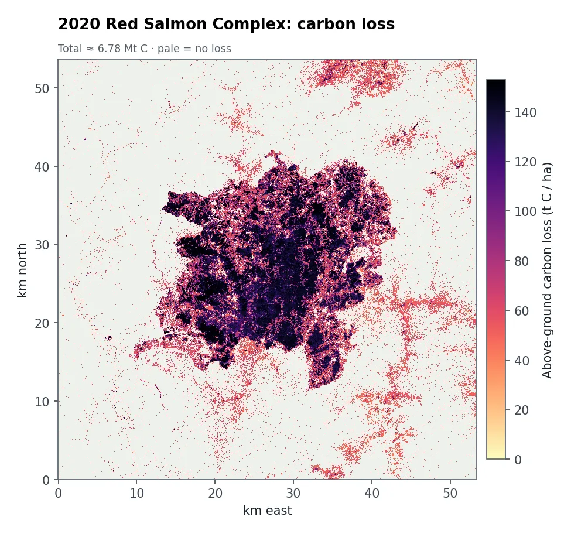
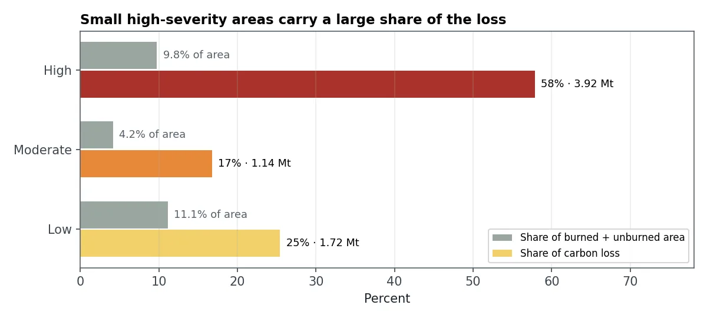
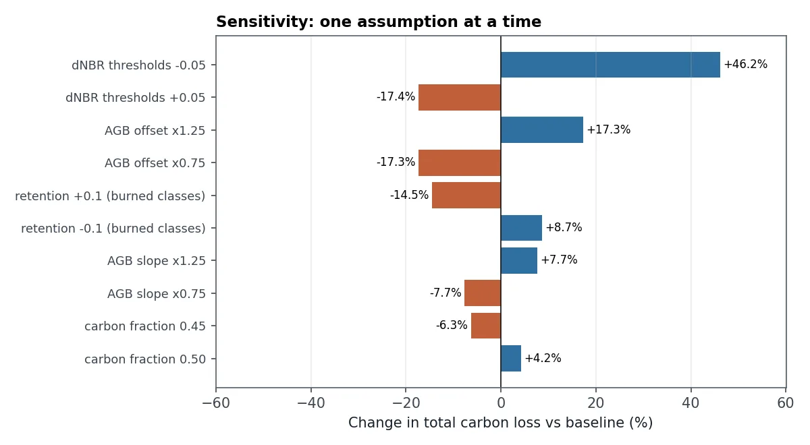

The question
Forest owners, carbon-credit projects and climate reporting need to know how much carbon a fire released. The answer depends on how severely each patch burned and how much wood was there to begin with.
What I did
- Compared Sentinel-2 images from July 2020 (before) and June 2021 (after), at 10 m resolution.
- Mapped burn severity with the dNBRDifference in Normalised Burn Ratio before and after a fire. The bigger the drop, the more severely the vegetation burned., using standard thresholds for unburned, low, moderate and high severity.
- Estimated the wood before the fire (AGBAbove-ground biomass: the dry weight of trunks, branches and leaves, in tonnes per hectare.) from a simple vegetation model, and how much of it each severity class lost.
- Converted biomass to carbon (48% of dry wood is carbon) and added it up.
- Stress-tested every assumption by moving each one up and down and rerunning the whole estimate.
What the results show


High-severity burning covered only about 10% of the area but caused 58% of the carbon loss. In total the forest lost an estimated 6.8 million tonnes of carbon, about 17% of what it held before.

The sensitivity test shows which assumption matters most: the burn-severity thresholds. Lowering them slightly raises the total by 46%. A client therefore needs a range, not one number, and field plots would narrow it the most.
How sure can we be?
- The biomass model is a simple assumption, not calibrated with field measurements. It can be swapped for a published biomass map.
- Seasons differ. The images are from July and June of different years, so some "low severity" pixels outside the fire are probably just seasonal change.
- Only living trees above ground are counted. Soil, litter and later tree deaths are left out.
- My original coursework reported 4.5 Mt using a different burn layer. The difference is explained in the repository.
What a client gets
- Burn-severity and carbon-loss maps (GeoTIFF)
- Tables by severity class and by area of interest
- A sensitivity table showing the plausible range
- Advice on where field plots would reduce uncertainty most